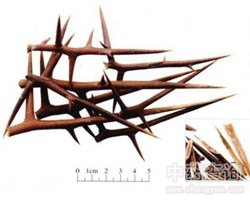

皂角刺

拼音
Zào Jiǎo Cì
别名
天丁、皂丁
来源
本品为豆科植物皂荚Gleditsia sinensis Lam. 的干燥棘刺。全年均可采收，干燥，或趁鲜切片，干燥。
生境分布
主产江苏、湖北、河北、山西、河南、山东。此外，广东、广西、四川、安徽、浙江、贵州、陕西、江西、甘肃等地亦产。
药材特点
植物形态详"皂荚"条。
性状
本品为主刺及1～2次分枝的棘刺。主刺长3～15cm或更长，直径0.3～1cm；分枝刺长1～6cm，刺端锐尖。表面紫棕色或棕褐色。体轻，质坚硬，不易折断。切片厚0.1～0.3cm，常带有尖细的刺端；木部黄白色，髓部疏松，淡红棕色；质脆，易折断。无臭，味淡。
性味
辛，温。
功能主治
消肿托毒，排脓，杀虫。用于痈疽初起或脓成不溃；外治疥癣麻风。
用法用量
3～9g。外用适量，醋蒸取汁涂患处。
化学成分
含黄酮甙、酚类，氨基酸。
药理作用
1：抗癌作用：1.体外试验：热水浸出物对JTC-26抑制率为50-70%
2：体内实验：对浊鼠肉瘤-180有抑制活性的作用
3：煎剂用平板打洞法：对金黄色葡萄球菌和卡他球菌有抑制作用；水浸剂60g/kg灌胃对肉瘤-180的抑制率为32.8%
摘录
《中国药典》